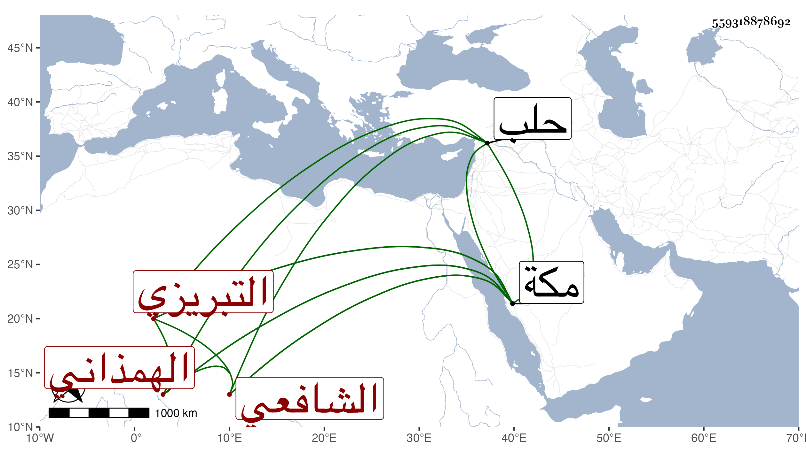

0902Sakhawi.DawLamic.ITO20230111-ara1.EIS1600.559318878692
Biography ID: 559318878692
805
لطف الله بن يعقوب بن إسماعيل بن إسحاق بن مسعود الهمذاني ثم التبريزي الشافعي نزيل مكة . ولد تقريبا سنة خمس وأربعين وثمانمائة بهمدان وهاجر منها لتبريز فقطنها للطلب وأخذ بها عن حاجي محمد الفراز في الأصلين وعن ظهير الدين الأردبيلي في أصل الدين خاصة وعن يوسف المراغي في المعاني والبيان وبغيرها من أعمالها عن إسماعيل البابي في الفقه والنحو والصرف وعن الصدر الشيرازي في الطب ، وسافر بقصد الحج فورد حلب فما دونها وتوجه مع الركب الشامي في سنة ثمان وثمانين أو التي قبلها فقطن مكة وتصدى رها لإقراء الطلبة في كثير من الفنون بل كان يقرئ في فقه الحنفية ، وعالج جماعة في الطب كأخي وامتنع من الأخذ لشيء وكان فاضلا خيرا متواضعا منجمعا تردد إلي غير مرة ورجع مع موسم سنة ثلاث وتسعين .
